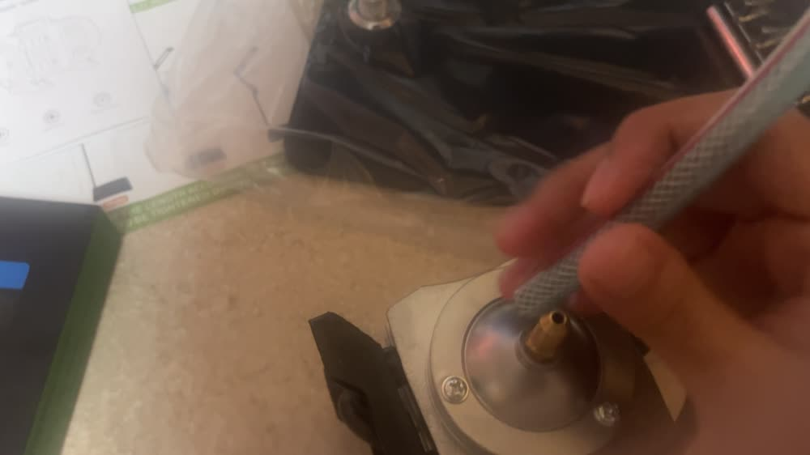
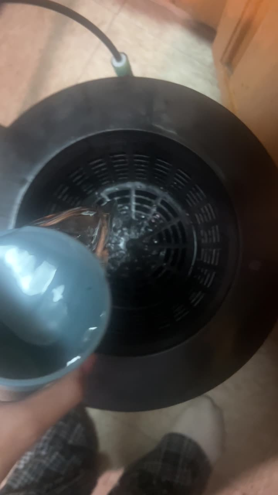
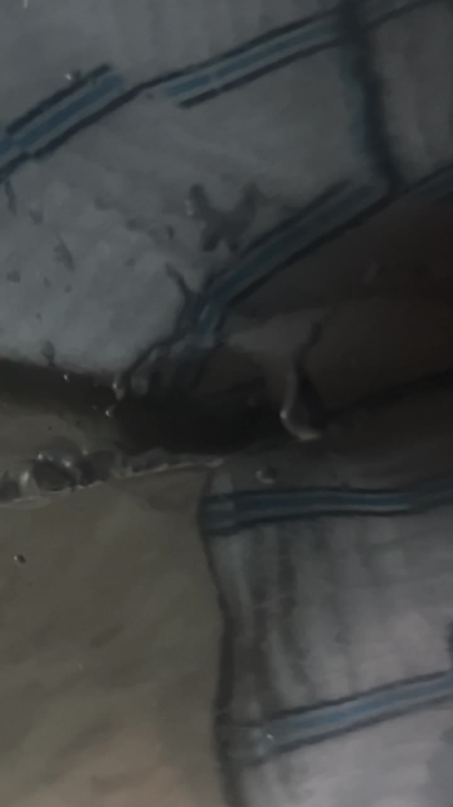

BUILD JOURNAL / IN PROGRESS
Root Spa: the first build
A one-bucket hydroponic trial: connecting the system, testing it with water, and working through a leak.
Where it stands
November 8, 2026: The replacement has arrived. I haven’t started seeds or added journal entries yet.
Build → test → revise
01 / Assemble
I connected the pump and tubing to the bucket, then fitted the net-basket lid.
02 / Water test
The original bucket leaked. I paused the trial, tried tape after recording, and requested a replacement when the leak continued.
03 / Restart
The replacement is here. The next step is to check the setup again before beginning the growing stage.
Build gallery
Photos from the original trial. Select an image to see it larger.






The original trial
35-second build video with on-screen captions. Its final “waiting for a replacement” card records the earlier status; the replacement has now arrived.
What this changes in my design
A successful connection is only the first step. The leak made the water test a clear checkpoint before planting. My final farm plan also needs enough room to reach connections, lift the lid, and clean the reservoir.
Follow the final farm design →Growing journal
NEXT CHAPTER / NOT STARTED
Room for the growing story.
Completed journal entries will appear here with a date, photo, observation, and next step. There are no seed, growth, or harvest records yet.